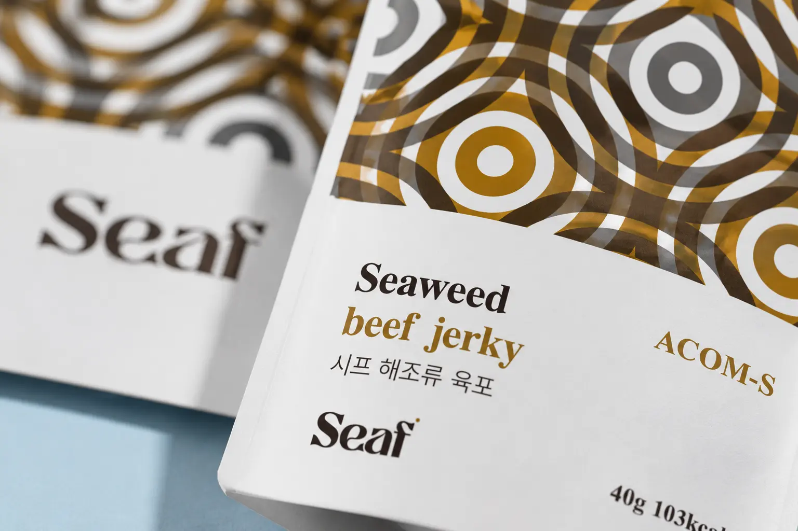
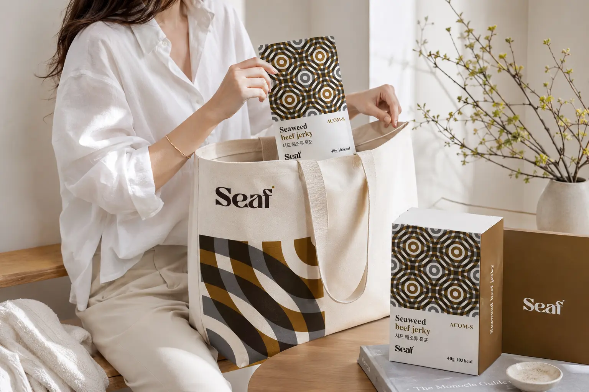
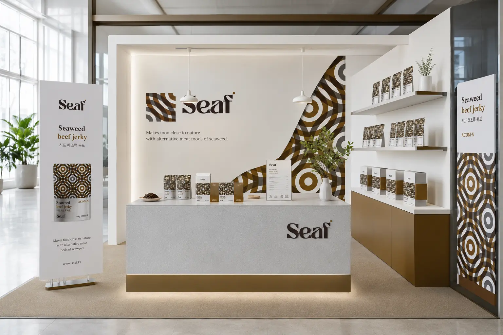
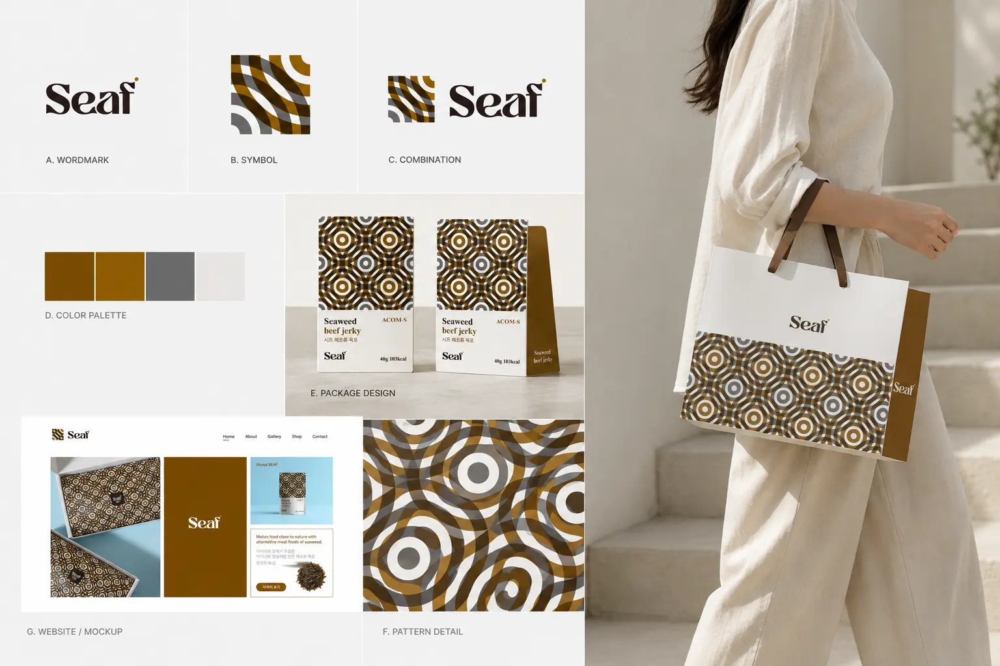
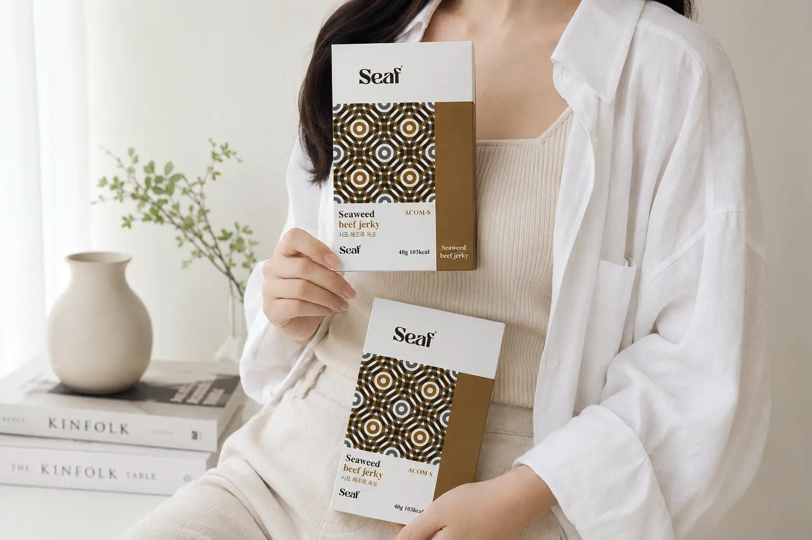
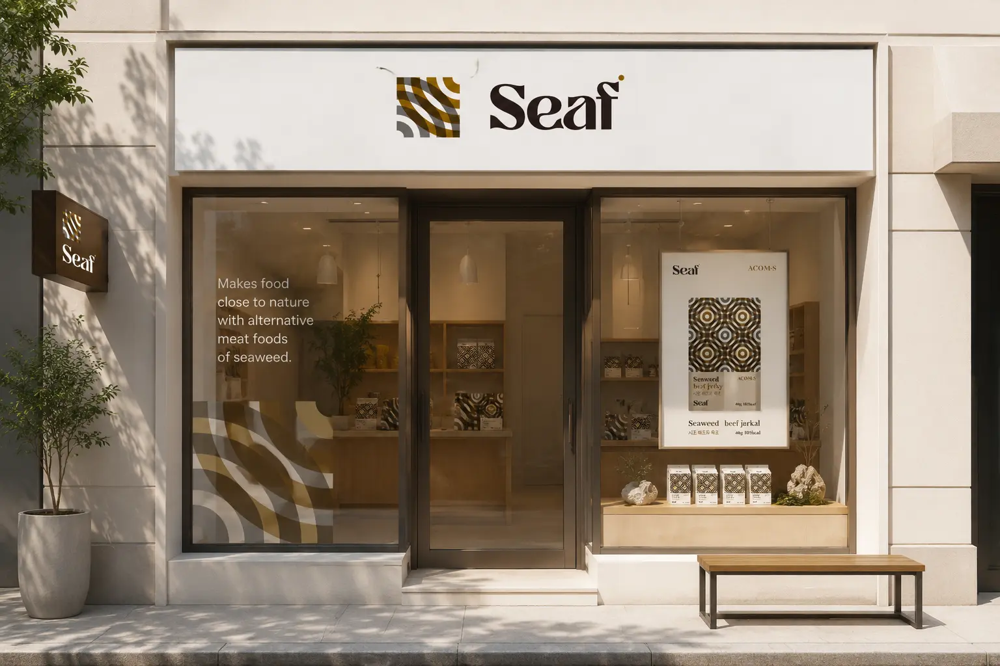
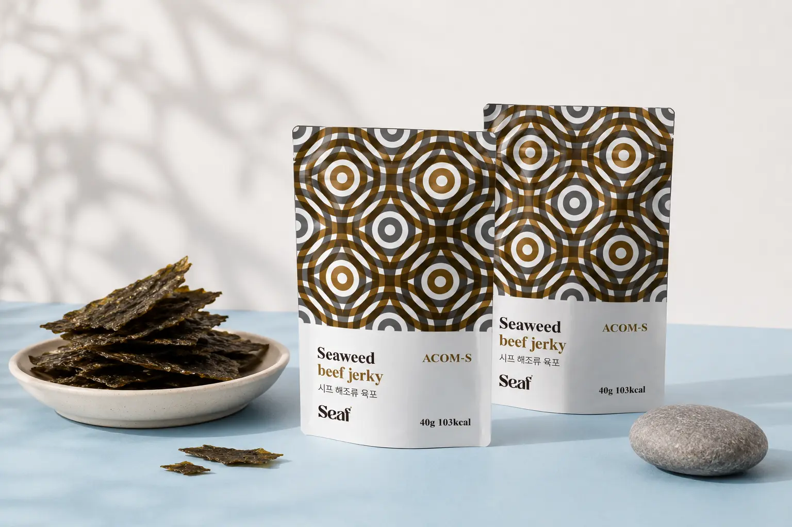
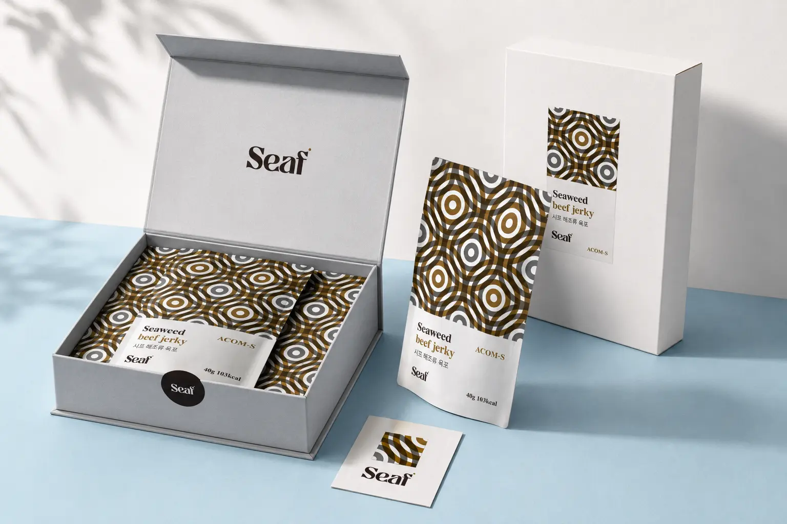
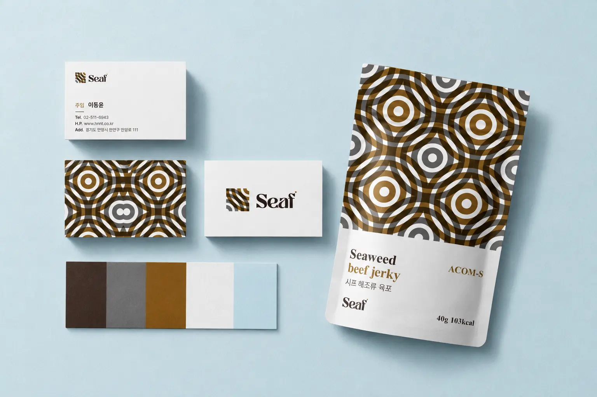
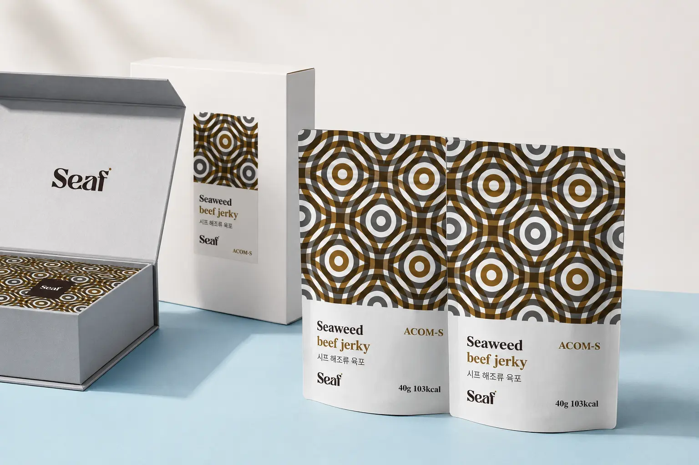

Seaf의 목표는 해조류 기반 대체육을 낯선 식품이 아닌 자연스럽고 매력적인 선택지로 인식시키는 것이다. 기존 육포의 익숙한 형태를 유지하면서도 해조류 원료를 활용해 건강하고 지속가능한 식품 이미지를 전달한다. 패키지, 웹사이트, 모바일, 명함 등 다양한 접점에서 일관된 시각 언어를 구축해 브랜드 신뢰도를 높인다. 전통적인 소재와 현대적인 그래픽 패턴을 결합해 국내외 시장에서도 차별화된 브랜드 인상을 형성한다. 최종적으로는 Seaf를 해조류 대체식품 시장 안에서 프리미엄하고 독창적인 브랜드로 자리 잡게 하는 것을 목표로 한다.
Portfolio / Brand Identity
SEAF
Seaf는 해조류를 기반으로 한 대체육 식품 브랜드로, 자연에서 얻은 원료를 현대적인 식품 경험으로 확장하는 브랜드이다. 다시마와 톳에서 추출한 아미노산 복합체를 활용해 해조류 육포라는 새로운 제품군을 제안한다. 브랜드는 자연성, 프리미엄, 전통성을 핵심 키워드로 삼아 건강한 식문화와 차별화된 식품 이미지를 함께 전달한다. 한복과 전통 문양에서 느껴지는 조형미를 현대적인 패키지와 디지털 디자인에 접목해 독창적인 브랜드 분위기를 만든다. Seaf는 해조류가 가진 가능성을 식품 브랜드의 새로운 가치로 전환하는 프리미엄 대체식 브랜드로 설계되었다.
- Scope
- Brand Identity / Product
- Studio
- BDLab
- Year
- 2026

Seaf는 “Makes food close to nature with alternative meat foods of seaweed”라는 메시지를 중심으로 브랜드의 방향성을 제시한다. 이는 자연에 가까운 식품을 만들고, 해조류를 통해 새로운 대체육 문화를 제안한다는 의미를 담고 있다. 브랜드 메시지는 건강과 환경을 직접적으로 강조하기보다, 자연성과 식품의 본질에 가까운 이미지를 차분하게 전달한다. 다시마와 톳이라는 해양 원료는 브랜드의 차별성과 제품 신뢰도를 높이는 핵심 요소로 작동한다. Seaf는 자연에서 출발한 원료를 현대적인 식문화로 연결하는 브랜드 메시지를 일관되게 구축하고 있다.
Seaf의 디자인은 전통적인 패턴 이미지와 현대적인 레이아웃을 결합해 독특한 프리미엄 식품 브랜드 이미지를 만든다. 무드보드에 나타난 한복, 전통 장식, 문양, 강한 컬러 대비는 브랜드가 가진 전통성과 실험성을 동시에 보여준다. 패키지 상단에 반복적으로 적용된 원형 패턴은 해조류의 물결감과 전통 문양의 장식성을 함께 연상시킨다. 전체 디자인은 화이트 여백을 넓게 사용해 제품 정보를 명확하게 전달하면서도 패턴이 가진 시각적 힘을 살린다. 결과적으로 Seaf의 디자인은 자연 원료 기반의 식품을 고급스럽고 문화적인 브랜드 경험으로 확장한다.








